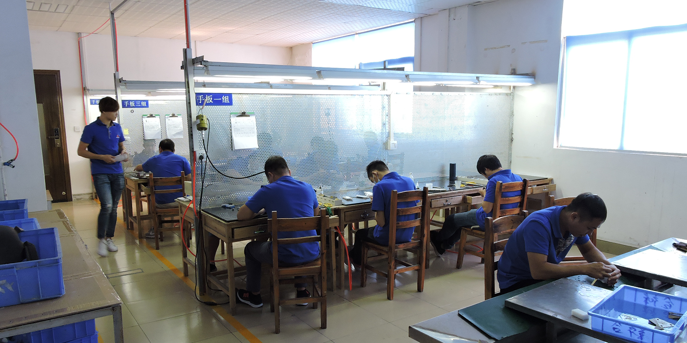
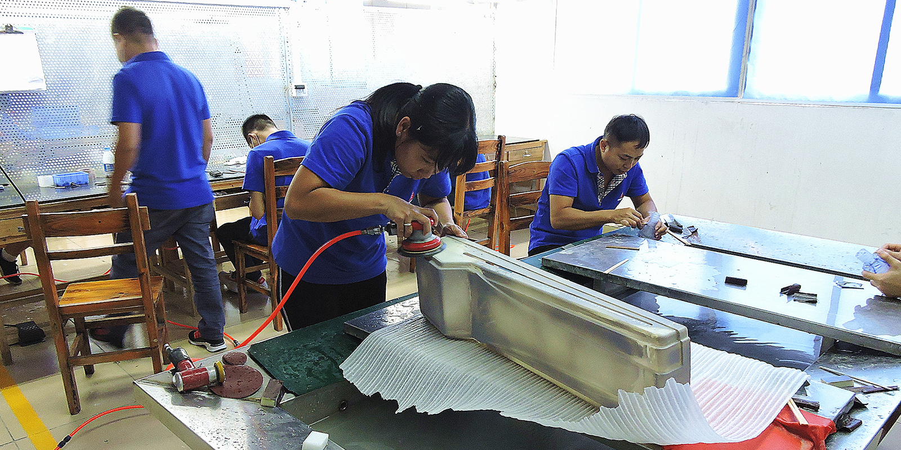
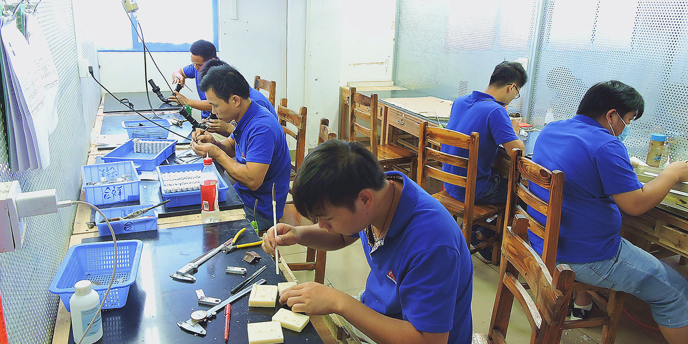
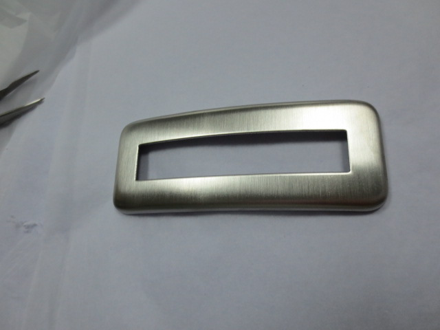
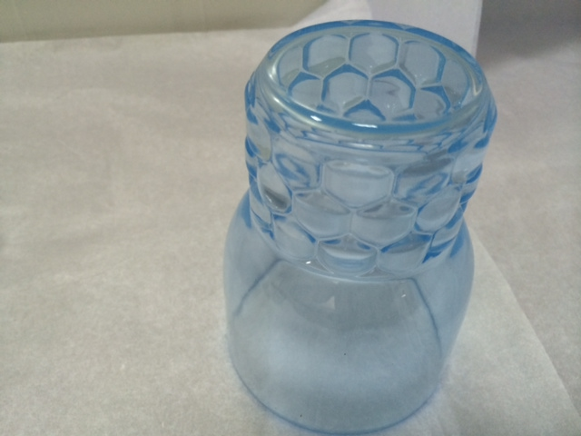
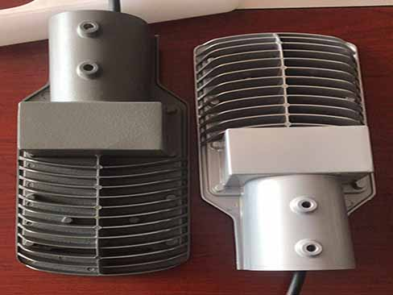
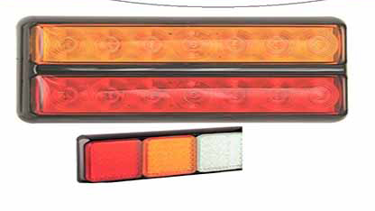

Rapid Tooling
At TIPTOP,we specialize in high-quality custom plastic injection molding and mold tool making.Tool can be export oversea or production and maintenance in TIPTOP.
Our rapid steel mold service is specifically designed to deliver parts in the shortest possible timescales.
If you are looking for real materials,quality injection molded components, TIPTOP is your best choice for low volume production to deliver your concept to market.
Our engineer will simplify the mold frame to save cost for you.
TIPTOP could offer different types of plastic available for you to choose from,also with different texture .Plating,anodizing,silk-screen,soft touch paint… are also available.
- 
- 

